Configure the MFT Flow
Set up your Automated File Transfer (AFT) portal with partner organizations, endpoints, and a distribution flow.
The Scenario
You are representing X Battery, a major supplier in the automotive industry. Your CRM system generates invoices, purchase orders, and shipping notices that need to be automatically distributed to multiple automotive partners: BMW, Mazda, and Volkswagen.
The challenge: files are generated from an internal system (simulated by a Boomi process) that appends the partner name to each filename. These files need to be routed automatically so each partner receives only their specific files — with full multi-tenant isolation.
Lab Objective: The "Fan-Out" Pattern
You will configure a distribution pattern where a single Boomi integration pushes files into the MFT platform, which then routes them to the correct partner based on file naming rules:
- Integration ➔ MFT ➔ Target: BMW
- Integration ➔ MFT ➔ Target: Mazda
- Integration ➔ MFT ➔ Target: Volkswagen
Technical Architecture
- Source: A Boomi integration process that creates source data and passes it to the Boomi MFT connector
- Routing Logic: MFT routes files to each partner target endpoint based on filename regex filters
- Security: Multi-tenant isolation — partners cannot "see" into other directories
Lab URLs
Create Organizations & Endpoints
In the AFT portal, create organizations for each automotive partner and add the appropriate endpoints to each.
-
1
From the overview page, navigate to Organizations.
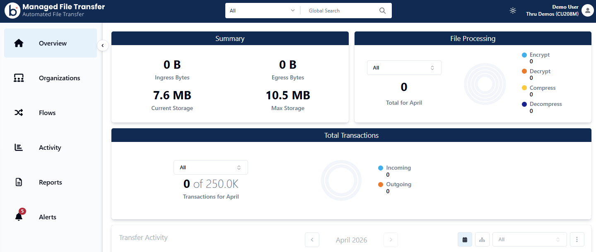
-
2
Click Add Organization and create three organizations named:
BMW,Mazda, andVW. -
3
Within each of these organizations, select Endpoints and add an endpoint of type Thru SFTP Server. Name each endpoint
SFTP Server.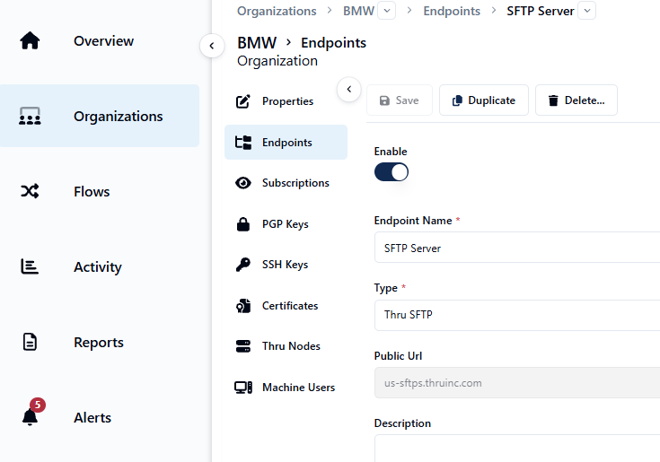
-
4
Add an additional organization called
Integration. -
5
Within the Integration organization, add an Endpoint. Choose the type Thru iPaaS Connector and name it
Boomi Integration.
Create the Distribution Flow
Create a new MFT Flow that defines how files will be distributed from the Boomi integration to the three automotive partners.
-
1
From the AFT portal, select Flow from the sidebar and click Add Flow.
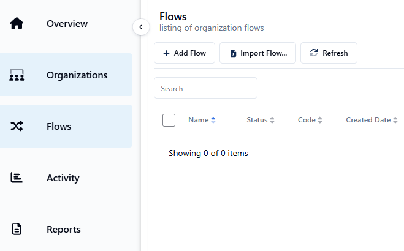
-
2
Name the Flow:
Boomi Integration (CRM/Source → AFT → Multiple Partner Targets)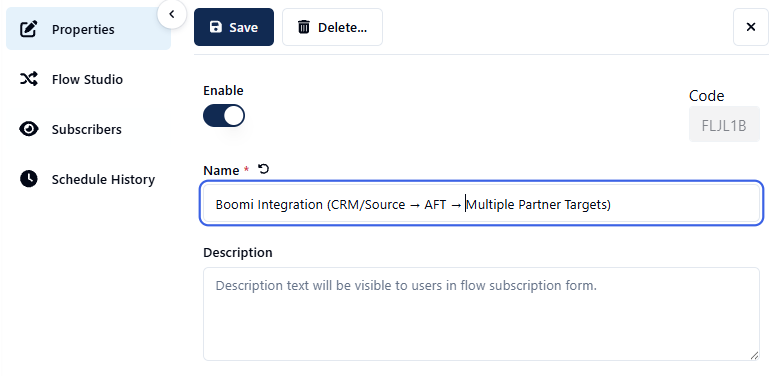
-
3
Click Save. Once saved, you will land in Flow Studio.
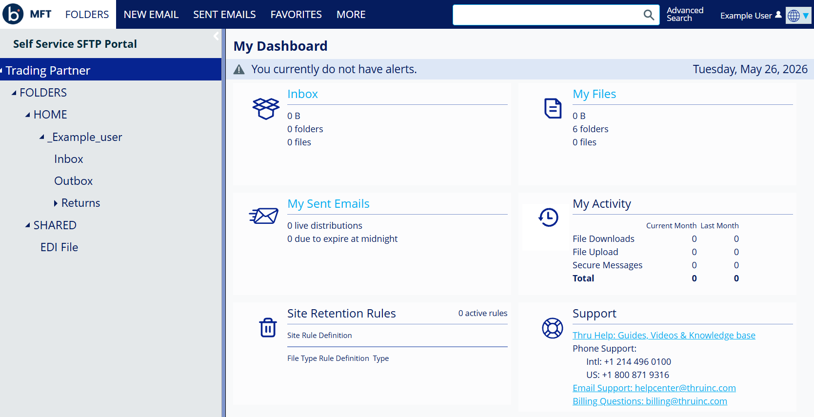
Add Subscribers & Flow Endpoints
Subscribe all organizations to the flow, then wire up both the target (partner) and source (integration) endpoints in Flow Studio.
Add Subscribers
-
1
In Flow Studio, click on Subscribers, then click Add Subscribers.
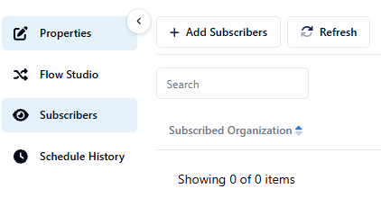
-
2
Select all the organizations (BMW, Mazda, VW, Integration) and click Subscribe Selected.
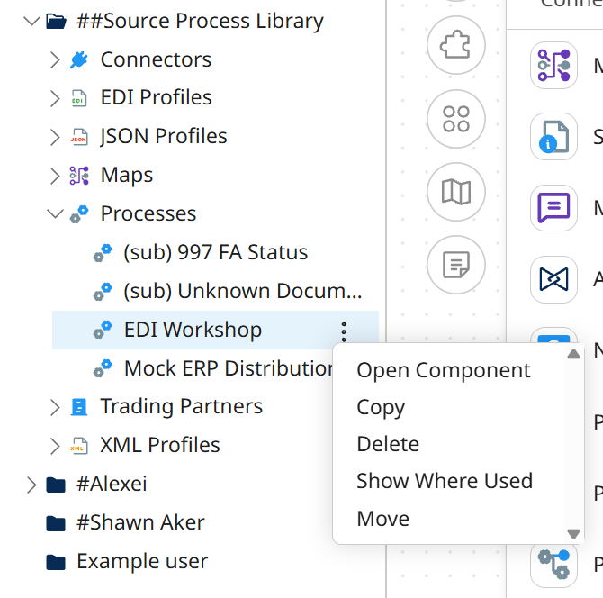
Add Target Flow Endpoints
-
3
Back in Flow Studio, click ADD FLOW ENDPOINT on the Target Side. Add each manufacturer in turn, selecting the SFTP Server Endpoint for each. Repeat for BMW, Mazda, and VW.
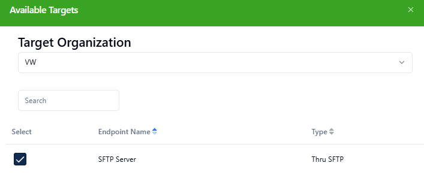
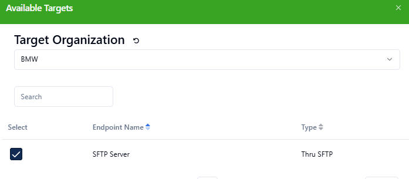
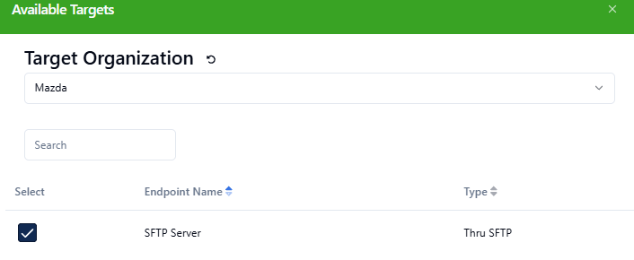
-
4
Flow Studio should now look like this on the target side — three partner endpoints visible.

Add Source Flow Endpoint
-
5
Click ADD FLOW ENDPOINT on the Source Side. From the available sources, choose Integration.
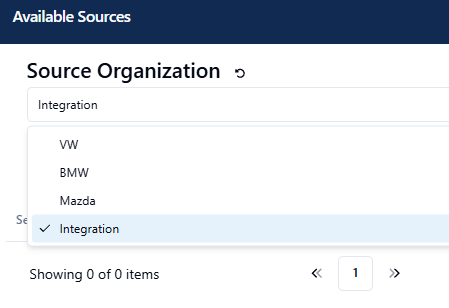
-
6
Select the available endpoint (Boomi Integration). The Source side should now look like this.
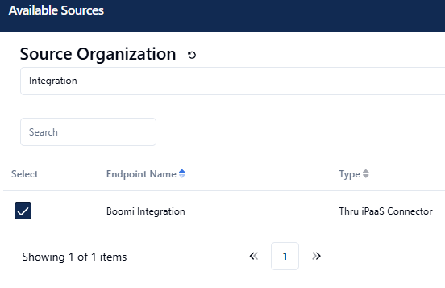
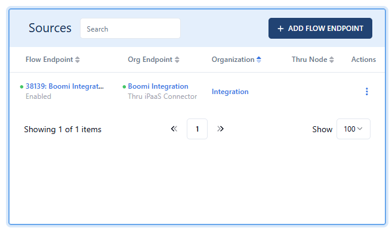
Embedded message: Server returned HTTP response code: 401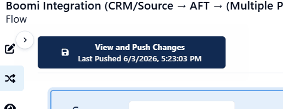
Capture Connection Details
Retrieve the connection credentials from the Boomi Integration Flow Endpoint — you'll need these when configuring the MFT Connector in Exercise 2.
-
1
In Flow Studio, select the Boomi Integration Source Flow Endpoint, or use the Actions menu and choose Edit Flow Endpoint Settings.
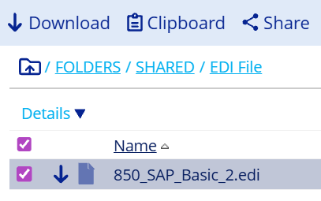
-
2
From the Flow Endpoint Editor — Source, change from the Configuration tab to the Connection tab.
-
3
You will see connection credentials. Capture this information to a text file — enter these exact values into your MFT Connector configuration in Exercise 2.
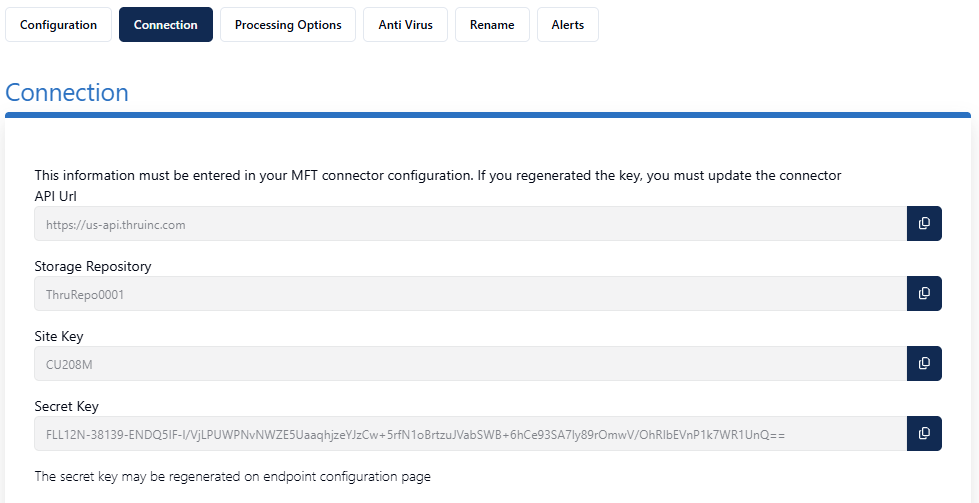
Next up